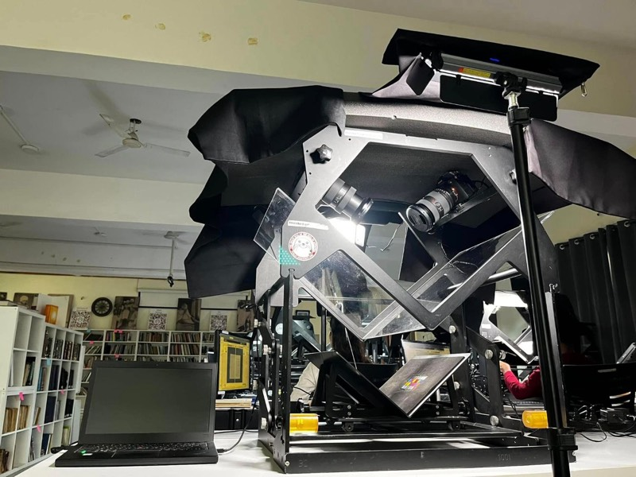

ದೇಣಿಗೆ ನೀಡಿ
ನಮಗೆ ಉಪಕರಣಗಳು, ತರಬೇತಿ ಪಡೆದ ಸಿಬ್ಬಂದಿ ಮತ್ತು ಹೆಚ್ಚಿನ ಕೇಂದ್ರಗಳು ಬೇಕು.
ಪ್ರತಿ ತಿಂಗಳು ಒಂದು ಕೋಟಿ ಪುಟಗಳನ್ನು ಸ್ಕ್ಯಾನ್ ಮಾಡುವುದು ಕಾರ್ಲ್ ಮಲಮಡ್ ಅವರ ಗುರಿ. SOK ಈಗ 10–15 ಲಕ್ಷದಲ್ಲಿದೆ ಮತ್ತು ಧನಸಹಾಯ ಸಿಕ್ಕ ತಕ್ಷಣ ಬೆಳೆಯಬಲ್ಲದು.
ಕೊರತೆ
ನಮ್ಮನ್ನು ತಡೆಯುವುದು ಹಣ
“ನಾವು ಪ್ರಗತಿ ಸಾಧಿಸುತ್ತಿದ್ದೇವೆ. ಆದರೆ ತಾಂತ್ರಿಕ ಸಮಸ್ಯೆಗಳು ಮತ್ತು ಹಣ ಸಂಗ್ರಹದಲ್ಲಿನ ವಿಳಂಬದಿಂದ ಇದು ಸುಲಭವಲ್ಲ,” ಎಂದು ಕಾರ್ಲ್ ಮಲಮಡ್ 2025ರ ಆಗಸ್ಟ್ನಲ್ಲಿ The Hindu ಗೆ ಹೇಳಿದರು. ವೆಚ್ಚ ಕಡಿಮೆ ಮಾಡಲು SOK ತನ್ನದೇ ಸ್ಕ್ಯಾನರ್ಗಳನ್ನು ನಿರ್ಮಿಸಿದೆ, ಆದರೂ ಒಂದು ಪುಟ ಸ್ಕ್ಯಾನ್ ಆಗುವ ಮೊದಲು ಪ್ರತಿ ಹೊಸ ಕೇಂದ್ರಕ್ಕೂ ಉಪಕರಣಗಳು, ತರಬೇತಿ ಪಡೆದ ತಂಡ ಮತ್ತು ಹವಾನಿಯಂತ್ರಿತ ಕೊಠಡಿ ಬೇಕು.
ಮಹತ್ವಾಕಾಂಕ್ಷೆ
ತಿಂಗಳಿಗೆ 15 ಲಕ್ಷ ಪುಟಗಳಿಂದ ಒಂದು ಕೋಟಿಗೆ
“ನಾವು ಪ್ರತಿ ತಿಂಗಳು ಒಂದು ಕೋಟಿ ಪುಟಗಳನ್ನು ಸ್ಕ್ಯಾನ್ ಮಾಡುವುದನ್ನು ನೋಡಲು ಬಯಸುತ್ತೇನೆ,” ಎಂದು ಮಲಮಡ್ 2024ರ ಡಿಸೆಂಬರ್ನಲ್ಲಿ Frontline ಗೆ ಹೇಳಿದರು; ಇದು ಸುಮಾರು ಏಳು ಪಟ್ಟು ಹೆಚ್ಚಳ. ಅಲ್ಲಿಗೆ ತಲುಪಲು ಹೆಚ್ಚು ಸ್ಕ್ಯಾನರ್ಗಳು, ಹೆಚ್ಚು ತರಬೇತಿ ಪಡೆದ ತಂತ್ರಜ್ಞರು ಮತ್ತು ಹೆಚ್ಚು ಸಮುದಾಯ-ನಡೆಸುವ ಕೇಂದ್ರಗಳು ಬೇಕು; ಪ್ರತಿ ಕೇಂದ್ರವನ್ನೂ ಅದರ ಪರಂಪರೆ ಯಾರದೋ ಆ ಸಮುದಾಯವೇ ನಡೆಸುತ್ತದೆ.
SOK ನಿಗದಿತ ದರಗಳನ್ನು ಪ್ರಕಟಿಸುವುದಿಲ್ಲ: ಉಪಕರಣಗಳ ವೆಚ್ಚ ಬದಲಾಗುತ್ತದೆ, ಮತ್ತು ಸರಿಯಾದ ಮೊತ್ತ ನಿಮ್ಮ ನಗರ ಹಾಗೂ ಅಪಾಯದಲ್ಲಿರುವ ಸಂಗ್ರಹವನ್ನು ಅವಲಂಬಿಸಿರುತ್ತದೆ. ಮಾತುಕತೆಯಾದ ಕೆಲವೇ ದಿನಗಳಲ್ಲಿ ವಿವರವಾದ, ಅಂಶವಾರು ಪ್ರಸ್ತಾವನೆಯನ್ನು ನೀಡುವುದಾಗಿ ನಾವು ಬದ್ಧರಾಗಿದ್ದೇವೆ.
ಒಂದು ಸ್ಕ್ಯಾನರ್ ಕೇಂದ್ರಕ್ಕೆ ಉಪಕರಣ ಒದಗಿಸಿ
ಸಂಪೂರ್ಣ ಮುಕ್ತ ಯಂತ್ರಾಂಶದ ಸ್ಕ್ಯಾನಿಂಗ್ ಕೇಂದ್ರ: ಎರಡು ಡಿಎಸ್ಎಲ್ಆರ್ ಕ್ಯಾಮೆರಾಗಳು, ಮೇಲ್ಭಾಗದ ಕಾಪಿ-ಸ್ಟ್ಯಾಂಡ್ ವ್ಯವಸ್ಥೆ, ಮೃದು ಎಲ್ಇಡಿ ಬೆಳಕು, ಪುಸ್ತಕದ ತೊಟ್ಟಿಲು ಮತ್ತು ಟೆಥರಿಂಗ್ ಸೆಟಪ್. ಇಂದು 15 ಕೇಂದ್ರಗಳಲ್ಲಿ ಓಡುತ್ತಿರುವುದು ಇದೇ ವಿನ್ಯಾಸ.
- ದಿನಕ್ಕೆ 5,000–10,000 ಪುಟಗಳನ್ನು ಡಿಜಿಟಲೀಕರಿಸುತ್ತದೆ
- ವಿನ್ಯಾಸ ಮುಕ್ತ ಮೂಲದ್ದು, ಮರುಬಳಕೆಗೆ ಸಿದ್ಧ
- ಆಮದು ಸ್ಕ್ಯಾನರ್ಗಳಿಗಿಂತ ತನ್ನ ವೆಚ್ಚವನ್ನು ತಾನೇ ಭರಿಸುತ್ತದೆ
 ಒಂದು ವರ್ಷ · ಅತ್ಯಧಿಕ ಪರಿಣಾಮ
ಒಂದು ವರ್ಷ · ಅತ್ಯಧಿಕ ಪರಿಣಾಮತಂತ್ರಜ್ಞರಿಗೆ ತರಬೇತಿ ನೀಡಿ ಉದ್ಯೋಗ ಕೊಡಿ
ತರಬೇತಿ ಪಡೆದ ಸ್ಕ್ಯಾನಿಂಗ್ ತಂತ್ರಜ್ಞ ಅಥವಾ ಪಟ್ಟಿಕಾರರಿಗೆ ಒಂದು ವರ್ಷ ವೇತನ ನೀಡುತ್ತದೆ. ಅವರು ದುರ್ಬಲ ಪುಸ್ತಕಗಳನ್ನು ನಿಭಾಯಿಸುತ್ತಾರೆ, ಗುಣಮಟ್ಟ ತಪಾಸಣೆ ಮಾಡುತ್ತಾರೆ ಮತ್ತು ಕೇಂದ್ರದ ಉತ್ಪಾದನೆಯನ್ನು ಸ್ಥಿರವಾಗಿಡುತ್ತಾರೆ.
- SOK ಅಕಾಡೆಮಿಯ ಮೂಲಕ ತರಬೇತಿ
- ಕೇಂದ್ರದ ಉತ್ಪಾದನೆಯನ್ನು ಸ್ಥಿರವಾಗಿಡುತ್ತದೆ, ಒಮ್ಮೆಗೆ ಮುಗಿಯುವುದಲ್ಲ
- ಅನುದಾನದ ನಂತರವೂ ಉಳಿಯುವ ಸ್ಥಳೀಯ ಕೌಶಲ್ಯವನ್ನು ಕಟ್ಟುತ್ತದೆ

ಪೂರ್ಣ ಕೇಂದ್ರಹೊಸ ಕೇಂದ್ರ ಆರಂಭಿಸಿ
ಮೈಸೂರು ಮಾದರಿಯಲ್ಲಿ ಸಂಪೂರ್ಣ ಹೊಸ ಡಿಜಿಟಲೀಕರಣ ಕೇಂದ್ರಕ್ಕೆ ಧನಸಹಾಯ ನೀಡುತ್ತದೆ: ಸ್ಥಳದ ವ್ಯವಸ್ಥೆ, ಹಲವು ಸ್ಕ್ಯಾನರ್ ಕೇಂದ್ರಗಳು, ಹವಾನಿಯಂತ್ರಣ, ಬಳಕೆ ಸಾಮಗ್ರಿಗಳು ಮತ್ತು ತರಬೇತಿ ಪಡೆದ ಸ್ಥಳೀಯ ತಂಡ; ಇದರಿಂದ SOK ಹೊಸ ನಗರ ಅಥವಾ ಸಂಗ್ರಹಕ್ಕೆ ವಿಸ್ತರಿಸುತ್ತದೆ.
- ನಾವು ಈಗಾಗಲೇ ನಡೆಸಿದ ಕೇಂದ್ರ ಮಾದರಿಯ ಪುನರಾವರ್ತನೆ
- ಅಪಾಯದಲ್ಲಿರುವ ಸಂಗ್ರಹಗಳ ಬಳಿಗೇ ಡಿಜಿಟಲೀಕರಣವನ್ನು ಒಯ್ಯುತ್ತದೆ
- ಸ್ಥಳೀಯ ಉದ್ಯೋಗ ಮತ್ತು ಆರ್ಕೈವಿಂಗ್ ಪರಿಣತಿಯನ್ನು ಸೃಷ್ಟಿಸುತ್ತದೆ
ವಸ್ತುರೂಪದ ಉಪಕರಣ ದೇಣಿಗೆ
ಕ್ಯಾಮೆರಾಗಳು, ಲ್ಯಾಪ್ಟಾಪ್ಗಳು, ಎಲ್ಇಡಿ ಪ್ಯಾನೆಲ್ಗಳು, ಹಾರ್ಡ್ ಡ್ರೈವ್ಗಳು ಅಥವಾ NAS ಸಂಗ್ರಹ. ದೇಣಿಗೆ ಅಥವಾ ರಿಯಾಯಿತಿ ದರದ ಸಾಮಾನ್ಯ ಯಂತ್ರಾಂಶವನ್ನು ಸ್ವೀಕರಿಸುವಂತೆ SOK ಯ ವ್ಯವಸ್ಥೆಗಳನ್ನು ವಿನ್ಯಾಸಗೊಳಿಸಲಾಗಿದೆ.
ಸಂಸ್ಥೆಗಳ ಸಿಎಸ್ಆರ್ ಮತ್ತು ಅನುದಾನಗಳು
ನೋಂದಾಯಿತ ಸೆಕ್ಷನ್ 8 ಲಾಭರಹಿತ ಸಂಸ್ಥೆಯಾಗಿ SOK ಕಾರ್ಪೊರೇಟ್ ಸಿಎಸ್ಆರ್ ಹಣ ಮತ್ತು ಪ್ರತಿಷ್ಠಾನಗಳ ಅನುದಾನವನ್ನು ಪಡೆಯಬಹುದು. ಕೇಳಿದರೆ ನೋಂದಣಿ ಮತ್ತು ಅನುಸರಣೆ ದಾಖಲೆಗಳನ್ನು ನೀಡುತ್ತೇವೆ.
ಸ್ವಯಂಸೇವಕ ತಾಂತ್ರಿಕ ಸಮಯ
ಕಾರ್ಲ್ ಮಲಮಡ್ ಅವರ ಸಲಹೆ: "ನಿಮ್ಮ ಸ್ಥಳೀಯ ಎನ್ಜಿಒವನ್ನು ದತ್ತು ತೆಗೆದುಕೊಳ್ಳಿ" ಮತ್ತು ಆಗೊಮ್ಮೆ ಈಗೊಮ್ಮೆ ಒಂದು ದಿನದ ಕೆಲಸ ನೀಡಿ. ಒಸಿಆರ್ ಸರಿಹೊಂದಿಸುವುದು, ಮೆಟಾಡೇಟಾ ಶುದ್ಧೀಕರಣ ಮತ್ತು ಅನುವಾದ ಎಲ್ಲವೂ ಲೆಕ್ಕಕ್ಕೆ ಬರುತ್ತವೆ.
ಸಣ್ಣ ದೇಣಿಗೆಯಾಗಲಿ, ಬಹುವರ್ಷದ ಅನುದಾನವಾಗಲಿ, ಮೊದಲು ನಮಗೆ ಬರೆಯಿರಿ
ನಿಮ್ಮ ಮನಸ್ಸಿನಲ್ಲಿರುವುದನ್ನು ತಿಳಿಸಿ, ಅದಕ್ಕೆ ತಕ್ಕ ಪ್ರಸ್ತಾವನೆ ಕಳುಹಿಸುತ್ತೇವೆ.
ನಮ್ಮನ್ನು ಸಂಪರ್ಕಿಸಿ